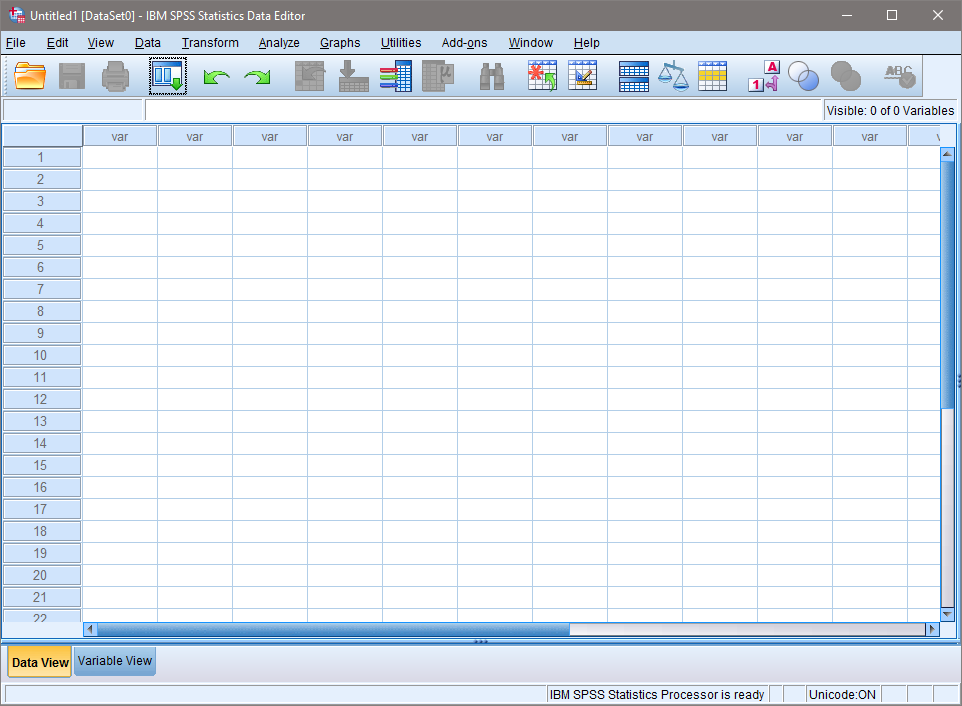

Statistikprogrammet vi använder heter SPSS (Statistical Package for the Social Science). SPSS finns på universitetets datorer, men du kan också ladda ned det till din privata dator (rekommenderas).

SPSS användargränssnitt efter att du väntat en halvtimme på det att starta.
Finns det andra program än SPSS? Många. SPSS är dock väl använt inom samhällsvetenskap eftersom det är ganska enkelt. Några andra vanliga program för statistik kan däremot vara bra att känna till.
Deskriptiv statistik är ett annat namn för beskrivande statistik. Det är inte svårare än att man beskriver egenskaperna hos en datamängd. I en enkätundersökning kan det handla om hur många som svarat, vilken medelålder de har, var de flesta bor och så vidare. Man uttalar sig alltså inte om något utanför datamängden.
Centralmått
Median
Medelvärde
Typvärde
Spridningsmått
Standardavvikelse
Variationsvidd
Kvartilavstånd
Sambandsmått
Pearsons r
Kendalls tau b och c
Cramers V
Phi
Inferentiell statistik
Inferentiell statistik handlar om att ta stickprov från en population, undersöka stickprovet, och sedan dra slutsatser om populationen baserat på stickprovet. Då går man alltså ett steg längre än att bara beskriva sin datamängd, utan säger något utöver de personer eller analysenheter man undersöker.
All inferentiell statistik kan egentligen kokas ned till en enkel formel: Data = modell + fel.
Khan Academy har en mängd YouTube-videor med grundläggande statistik till mer avancerad statistik. Börja gäran titta på spellistan nedan med grundläggande deskriptiv statistik.
Djurfeldt, G., Larsson, R. & Stjärnhagen, O. (2010). Statistisk verktygslåda 1: samhällsvetenskaplig orsaksanalys med kvantitativa metoder (2. uppl.). Lund: Studentlitteratur.
Field, A. P. (2013). Discovering statistics using IBM SPSS statistics: and sex and drugs and rock “n” roll (4th edition). Los Angeles: Sage.
Miles, J. & Shevlin, M. (2001). Applying regression & correlation: a guide for students and researchers. London: SAGE.
Yu, C.H. (2006). Philosophical foundations of quantitative research methodology. Lanham, Md.: University Press of America.
Webbplatser
onlinestatbook.com. Online Statistics Education: An Interactive Multimedia Course of Study. Developed by Rice University, University of Houston Clear Lake, and Tufts University.
Andy Fields statisticshell.com. Here you can uncover the searing agony of SPSS, the stomach churning fear of central tendency and the rancid bile of z-scores.
Program och webbtjänster (avancerat)
G*Power. Program för att beräkna statistisk power och sampelstorlek för experiment.
Effect Size Calculator. Webbtjänst för att beräkna effektstorlekar med konfidensintervall från olika teststatistika.